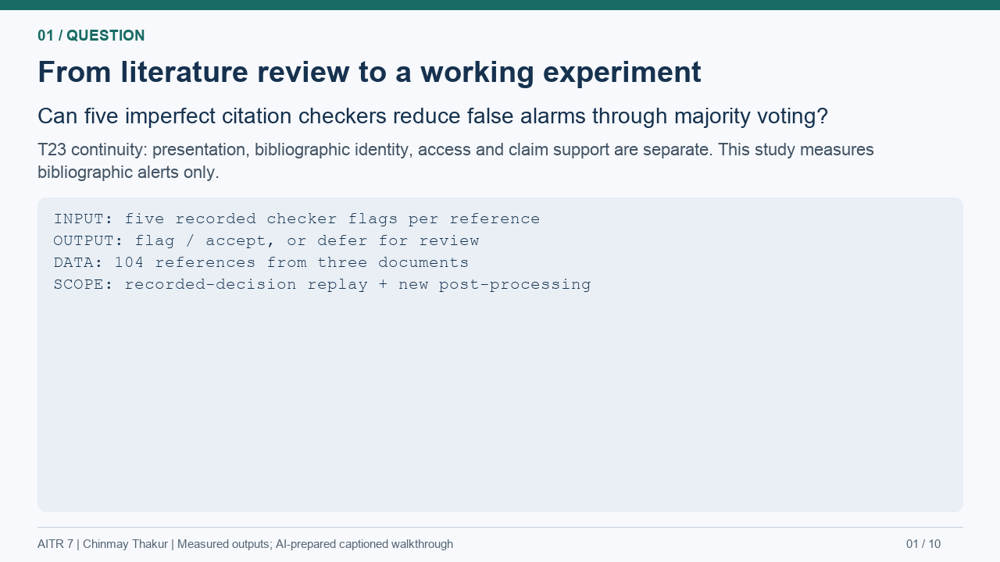

<!doctype html><html lang="en"><meta charset="utf-8"><meta name="viewport" content="width=device-width,initial-scale=1"><title>AITR 7 | Five-minute walkthrough</title><style>body{margin:0;background:#101c2a;color:#e8eff6;font:16px system-ui;text-align:center}main{max-width:1120px;margin:24px auto;padding:0 14px}img{width:100%;border-radius:12px}button{background:#e4eef6;color:#16324f;border:0;border-radius:6px;padding:10px 20px;margin:12px 4px;font:inherit;cursor:pointer}small{display:block;color:#afc0cf}progress{width:100%;height:8px}a{color:#a7d8dc}</style><main><h1>Five-minute code-and-results walkthrough</h1><progress id="progress" max="300" value="0"></progress><div><button id="prev">Previous</button><button id="play">Play</button><button id="next">Next</button><button id="restart">Restart</button><span id="time">0:00 / 5:00</span></div><small>10 panels, 30 seconds each. Actual saved results. AI-prepared; no student presentation has been recorded.</small><p><a href="five_minute_walkthrough.md">Presenter script</a> · <a href="viva_guide.md">Viva guide</a> · <a href="../paper/main.pdf">Paper</a></p></main><script>let t=0,playing=false;const $=id=>document.getElementById(id);function draw(){let i=Math.min(9,Math.floor(t/30));$('panel').src='assets/scene-'+String(i+1).padStart(2,'0')+'.png';$('time').textContent=Math.floor(t/60)+':'+String(t%60).padStart(2,'0')+' / 5:00';$('progress').value=t;$('play').textContent=playing?'Pause':'Play'}$('play').onclick=()=>{if(t>=300)t=0;playing=!playing;draw()};$('next').onclick=()=>{t=Math.min(270,(Math.floor(t/30)+1)*30);draw()};$('prev').onclick=()=>{t=Math.max(0,(Math.floor(t/30)-1)*30);draw()};$('restart').onclick=()=>{t=0;playing=false;draw()};setInterval(()=>{if(playing){t++;if(t>=300){t=300;playing=false}draw()}},1000);</script></html>